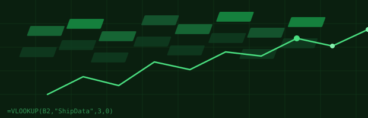
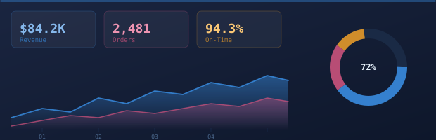

Data Analyst | Problem Solver | Tech Enthusiast
I'm André Santos, an analyst who believes that the details matter. Throughout my career — from ensuring quality standards in automotive manufacturing to managing international customs operations at FedEx — I've learned that precision and thorough analysis are the foundation of meaningful results.
I'm naturally curious and passionate about learning. Whether it's mastering a new analytical tool, understanding complex processes, or tackling challenging problems, I approach every opportunity with enthusiasm and focus. Technology fascinates me, and I'm constantly exploring how it can be leveraged to work smarter and more efficiently.

An Excel Analytics Model built with synthetic data replicating a real logistics company — exploring Excel functions, Power Query, Pivot Tables and VBA.

An interactive Power BI Dashboard — covering data modeling, DAX measures, and visual storytelling.
Analyzed customs documentation and shipment data to ensure regulatory compliance and identify process bottlenecks. Created comprehensive reports and interactive dashboards using Excel and Power BI to track KPIs, including clearance quality and productivity metrics for management. Conducted root cause analysis on delayed shipments, implementing corrective measures that reduced processing time. Mentored junior brokers on data validation procedures.
Monitored and analyzed production quality metrics for automotive component manufacturing, conducting statistical process control and implementing corrective actions to maintain ISO/IATF quality standards. Executed data cleaning procedures including error correction, duplicate removal, and format standardization for database readiness. Generated weekly quality reports and dashboards for cross-functional teams, facilitating data-driven decision-making.
Supported daily operations for a sports organization serving athletes with disabilities, managing administrative workflows and financial documentation. Designed and implemented an invoice database system to streamline financial record-keeping and improve data accessibility. Collaborated with international volunteers and stakeholders, developing strong cross-cultural communication skills in a multicultural environment.
Supported daily banking operations and data management activities in a fast-paced financial environment. Cleaned, validated, and prepared financial data for database integration, performing quality checks to maintain data integrity. Assisted in reconciling daily transactions and identifying discrepancies in account records through systematic data analysis.
I'm always interested in hearing about new opportunities and projects. Feel free to reach out!